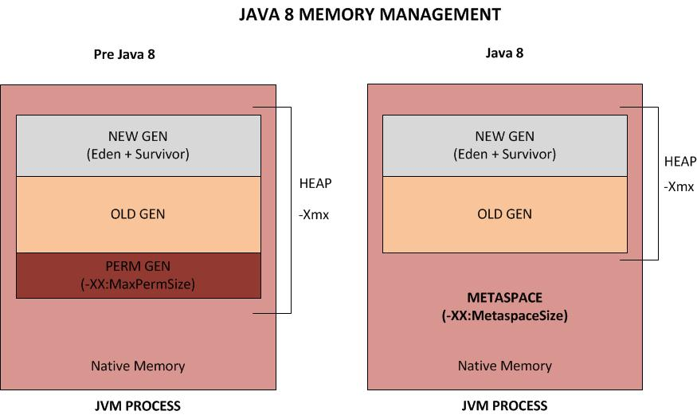
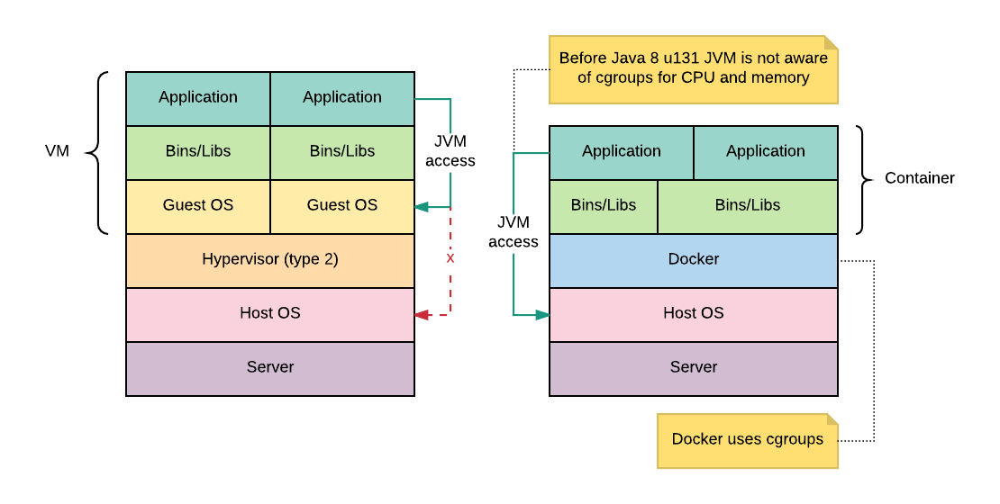
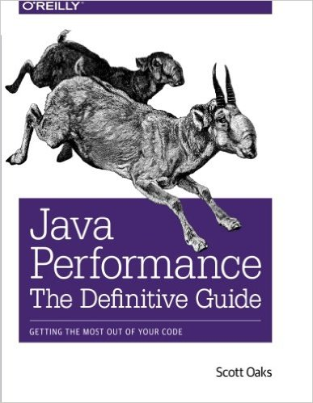
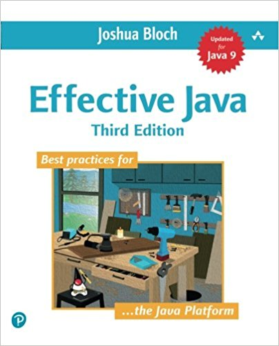

101 Profiling
For Microservices
Empower your developers #EYD
Juan Antonio Breña MoralAgenda
- Java Context
- Java profilers
- Introduction to VisualVM
- Profilers in Action
- Summary
- References
- Homework
- Q&A
Educational Goals
- Learn to use a Java Profiler
- Learn to use JVM flags
Java Context
- Java Architecture
- Java Memory Model
- Java & Containers
- JVM Flags
Java Architecture

Java Memory Model
Java & Containers
JVM Flags
java -Xms256m -Xmx256m -verbose:gc -XX:+UseG1GC -XX:-DisableExplicitGC \
-Dsun.management.jmxremote.level=FINEST \
-Dsun.management.jmxremote.handlers=java.util.logging.ConsoleHandler \
-Djava.util.logging.ConsoleHandler.level=FINEST \
-Dcom.sun.management.jmxremote.local.only=false \
-Dcom.sun.management.jmxremote.ssl=false \
-Dcom.sun.management.jmxremote.authenticate=false \
-Dcom.sun.management.jmxremote.port=9010 \
-Dcom.sun.management.jmxremote.rmi.port=9010 \
-Dcom.sun.management.jmxremote.host=0.0.0.0 \
-Djava.rmi.server.hostname=0.0.0.0 \
-agentlib:jdwp=transport=dt_socket,server=y,suspend=n,address=5005 \
-server \
-jar -jar app.jar
Java profilers
- What is Profiling?
- What kind of problems try to solve?
- Alternatives
What is Profiling?
The term profiling describes a dynamic analysis that covers issues of the resource management of a program during execution.
Performance analysts profile their programs to find methods that are worth optimizing: the “hot” methods.
What kind of problems try to solve a Profiler?
- CPU Bottleneck
- Memory Leak
- Multithreading problems
- Define with accuracy JVM Settings
Alternatives
- JProfiler (Commercial Product)
- YourKit (Commercial Product)
- Java VisualVM
Introduction to VisualVM
- Connections
- Overview
- Monitor
- Threads
- Sampler
- Profiler
Profilers in Action
- Scenario 1: Memory
- Scenario 2: CPU
References
Articles
Books
|  |
Books

|
 |
Books
Homework
- What is Locked ownable synchronizers?
- What is the default GC in your last Microservice?
- Did you do a Test A/B between Java 8 & Java 9?
Q&A
|
@juanantoniobm https://github.com/jabrena https://www.juanantonio.info |
"Pressure makes diamonds."- George S. Patton Jr.